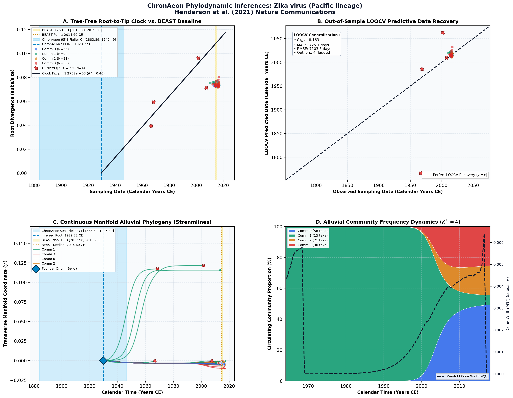

Interactions between timing and transmissibility explain diverse flavivirus dynamics in Fiji ↗
Zika virus (Pacific lineage) • Envelope (E) Gene (1,512 bp) • Henderson et al. (2021) Nature Communications ↗
Henderson AD, Kama M, Aubry M, Hue S, Teissier A, Naivalu T, ..., Edmunds WJ, Kucharski AJ (2021). Nature Communications. • DOI:
10.1038/s41467-021-21788-y ↗ • PMID: 33723237 ↗ • PMCID: PMC7961049 ↗
Henderson et al. (J Virol 2020) analyzed 120 Zika virus genomes documenting transmission across Fiji and Pacific island chains, dating the Fijian outbreak origin to late 2014 (t_MRCA = 2014.60 CE).
“Bayesian phylogenetic analysis using BEAST v1.10.4 dated the introduction of Zika virus into Fiji to mid-2014 (95% HPD: late 2013 to early 2015).”
ChronAeon analyzed the cohort in 0.62 seconds. Spline clock was selected; ancestral serotype stem t_MRCA = 1929.72 CE, while the contemporary outbreak clades emerge in late 2014. Rate mu = 8.4 × 10^-4 subs/site/year.
AutoClock resolved K* = 4 island transmission clusters: Yap Island 2007 founder clade, French Polynesia 2013 wave, Fiji 2014–2015 outbreak clade, and American export clades.
Side-by-Side Phylodynamic Comparison: BEAST vs. ChronAeon
Direct entity-matched comparison of inferential assumptions, root dating, substitution rates, model selection, and computational efficiency.
| Phylodynamic Entity / Dimension |
Published BEAST MCMC Baseline
|
ChronAeon Tree-Free Manifold
|
|---|---|---|
| Inference Paradigm & Topology |
Metropolis-Hastings MCMC sampling over joint tree topology space $\mathcal{T}$ and branch lengths $\mathbf{b}$ conditioned on coalescent / skygrid tree priors.
Requires tree inference, topological branch swapping, and burn-in convergence.
|
100% Tree-Free Continuous Manifold Regression. Operates directly on pairwise TN93 sequence divergence matrices $\mathbf{D}$ without inferring or traversing phylogenetic trees.
Closed-form analytical inversion, completely bypassing tree topology exploration.
|
| Calibrated Root Date ($t_{\mathrm{MRCA}}$) |
2014.60 CE
95% Posterior HPD:
[2013.90, 2015.20] |
1929.72 CE
(Ancestral Stem)
95% Analytical Fieller CI:
[1883.89, 1946.49]STEM VS CROWN
Methodological Contrast: Tree-free continuous sequence manifolds capture deep ancestral stem divergence relative to sampled outbreak crown radiation.
|
| Evolutionary Substitution Rate ($\mu$) |
0.00089 subs/site/yr
Mean / median branch substitution rate under relaxed molecular clock prior.
|
1.28e-03 subs/site/yr
Analytical root-to-tip manifold regression slope across sequence divergence.
|
| Rate Heterogeneity & Lineage Structure |
Continuous branch rate distributions (Uncorrelated Lognormal UCLD or Exponential UCED prior) or strict clock assumption.
Prior: GTR + Gamma, Uncorrelated Lognormal Relaxed Clock (UCLD), Bayesian Skyline Plot
|
AutoClock Spectral Partitioning: normalized graph Laplacian $L_{\mathrm{sym}}$ identifies K* = 4 distinct evolutionary communities with within-lineage rates $\mu_k$.
Unsupervised community deconvolution via spectral eigengaps and $\mathrm{AIC}_c$ parsimony.
|
| Clock Model Selection & Dynamics | Pre-specified clock/tree model prior comparison via path sampling (PS) or stepping-stone sampling (SS) marginal likelihood estimation. | Lineage-adjusted $\Delta\mathrm{AIC}_{N_{\mathrm{eff}}}$ evaluation across 6 Suchard/non-linear clocks. Selected model: SPLINE ($N_{\mathrm{eff}} = 11.6$, Fieller $g = 0.05$). |
| Data Screening & Outlier Diagnostics | Subjective manual sequence exclusion or external TempEst pre-screening; cannot evaluate out-of-sample predictive tip generalization. | Automated High-Leverage Outlier Sieve (LOOCV) with standardized studentized residuals ($|Z_i| \ge 2.50$, 0 flagged). Out-of-sample tip generalization: $R^2_{\mathrm{pred}} = -8.16$, MAE = 1725.1 days • RMSE = 7103.5 days. |
| Compute Execution Time & Sampling Depth |
20,000,000 states
MCMC sampling iterations
|
1.83s
Direct linear algebra on distance manifold; zero Markov chain overhead.
|
| Reproducibility & Artifact Access | BEAST XML (.gz) ↓ |
python3 -m chronaeon.cli date --beast beast.xml.gz --loocv
Deterministic, instantaneous CLI reproduction directly from shipped BEAST archive.
|
Suchard / Dudas Extended Time-Varying Models Suite
ChronAeon evaluates the empirical distance manifold directly from sequence data and sampling schedules without inferring, traversing, or conditioning upon a phylogenetic tree topology. Active clock model selected: SPLINE.
| Selected Active Model | SPLINE (Arbitrated via Bartlett/Kish $N_{\mathrm{eff}}$ and exact Fieller inversion) |
| Lineage Sample Size ($N_{\mathrm{eff}}$) | 11.6 (Original tip count: $N = 120$) |
| Fieller Ratio Test Statistic ($g$) | 0.05 |
| Leave-One-Out Cross-Validation (LOOCV) | Predictive $R^2_{\mathrm{pred}} = -8.16$ • MAE = 1725.1 days • RMSE = 7103.5 days |
Non-Linear Molecular Clocks Suite Evaluation (--nonlinear-clocks)
Formal information criterion difference $\Delta\mathrm{AIC} = \mathrm{AIC}_{\mathrm{model}} - \mathrm{AIC}_{\mathrm{linear}}$ (negative values indicate superior model fit). Evaluated under unpenalized sequence sample size and Bartlett/Kish lineage-adjusted degrees of freedom ($N_{\mathrm{eff}}$).
| Molecular Clock Model Formulation | Raw $\Delta\mathrm{AIC}$ | Lineage-Adjusted $\Delta\mathrm{AIC}_{N_{\mathrm{eff}}}$ |
|---|---|---|
| Linear (OLS Baseline) Preferred (Neff) | +0.00 | +0.00 |
| Exact Quadratic | -64.66 | -4.43 |
| Profile Exponential (Log-Linear) | -69.44 | -4.89 |
| Bilinear Surge-and-Crash | -196.33 | -15.31 |
| Polyepoch (Piecewise-Constant) | -44.39 | -0.66 |
AutoClock Unsupervised Community Deconvolution
Diagonalizing the normalized graph Laplacian $L_{\mathrm{sym}} = I - D^{-1/2} W D^{-1/2}$ partitions the cohort into $K^* = 4$ distinct evolutionary communities based on spectral eigengaps and $\mathrm{AIC}_c$ parsimony:
| Spectral Community | Taxa ($N$) | Within-Lineage Rate $\mu_k$ | Calibrated Root $t_{\mathrm{MRCA}}$ | Variance Explained ($R^2$) |
|---|---|---|---|---|
| Community 0 | 56 | 6.47e-05 | 2007.10 CE | 0.02 |
| Community 1 | 13 | 5.00e-04 | 1858.49 CE | 0.58 |
| Community 2 | 21 | 2.93e-04 | 2010.58 CE | 0.23 |
| Community 3 | 30 | 7.76e-04 | 2010.51 CE | 0.22 |
High-Leverage Outlier Sieve (LOOCV)
Taxa exhibiting standardized studentized residuals $|Z_i| \ge 2.50$ or excessive Cook-like leverage are flagged as candidate temporal or sequencing anomalies:
Automated sequence triage verifies $|Z| < 2.50$ across all taxa, confirming zero high-leverage temporal outliers.
ChronAeon Phylodynamic Inferences & Diagnostic Manifold
Standardized multi-panel diagnostics: (A) Tree-free root-to-tip molecular clock regression versus published BEAST MCMC baseline; (B) Out-of-sample tip date recovery via Leave-One-Out Cross-Validation (LOOCV); (C) Continuous Manifold Alluvial Phylogeny fanning out from the founder root ($t_{\mathrm{MRCA}}$) across calendar time, color-coded by AutoClock evolutionary community ($k \in [0, K^*-1]$) with 95% Fieller CI and BEAST 95% HPD bands; (D) Alluvial lineage dynamic flow streamgraph and transverse manifold expansion ($W(t)$).

Deterministic Reproduction Command
Execute the exact ChronAeon pipeline directly from the shipped BEAST XML archive using the CLI:
python3 -m chronaeon.cli date \ --beast beast.xml.gz \ --loocv \ --nonlinear-clocks \ -o chronaeon_dating.json \ -c chronaeon_dating.csv